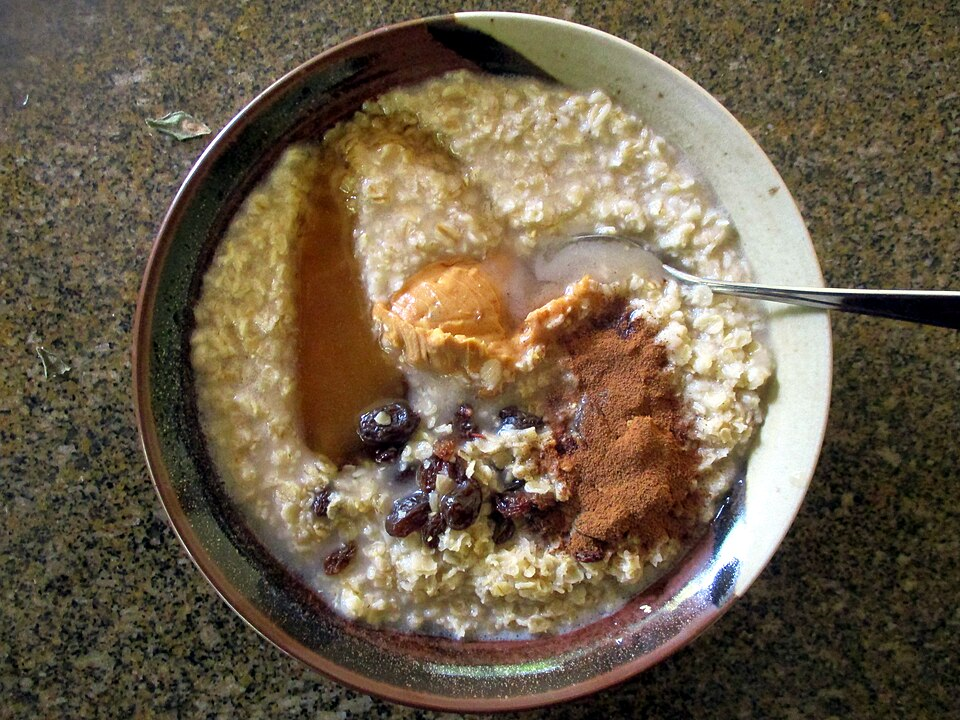

Breakfast, Prep, By Claude
1 1/2 cups steel-cut oats
4 1/2 cups water (or half water, half low-sodium chicken broth)
1/2 teaspoon kosher salt
1 tablespoon butter or olive oil
1 1/4 cups liquid egg whites (about 10 oz)
1/2 cup finely grated Parmesan or Pecorino (or sharp cheddar)
1 teaspoon coarsely ground black pepper, plus more to serve
4 scallions, thinly sliced
Optional add-ins
8 oz cremini mushrooms, sliced and sautéed
4 cups baby spinach, wilted in at the end
To serve (per bowl)
2 jammy eggs, halved
Your cheese-and-black-pepper steel-cut oats, scaled to a 5-day batch with extra protein. Egg whites stirred in at the end make the oats creamier without adding any egg flavor. Top each bowl with 2 jammy eggs (see Batch Jammy Eggs).
Set the Instant Pot to Sauté, melt the butter, and toast the oats for 2–3 minutes, stirring, until nutty-smelling. (Optional but adds a lot of flavor.)
Add the water and salt. Seal and cook on High Pressure for 5 minutes, then let the pressure release naturally for 15 minutes before venting.
Switch back to Sauté (low). Pour in the egg whites in a thin stream while stirring constantly, and keep stirring 1–2 minutes until the oats thicken and turn glossy. Don't stop stirring or the whites will scramble.
Turn off the pot. Stir in the cheese, black pepper, and mushrooms/spinach if using. Taste for salt.
Divide into 5 containers and top with scallions. Keeps 5 days in the fridge.
To reheat: add 2–3 tablespoons water, microwave 90 seconds, stir, then 30 more seconds. Top with 2 jammy eggs and more pepper.
On long-run days, add a slice of toast or a piece of fruit on the side for more carbs.
~400 CALORIES (with 2 eggs)
29G PROTEIN
15G FAT
45G CARBS
6G FIBER
Without eggs: ~260 cal, 17g protein
Photo: Oatmeal porridge 1-minute with additional ingredients.jpg by UserTwoSix, CC BY-SA 4.0, via Wikimedia Commons. Representative image, not this exact recipe.